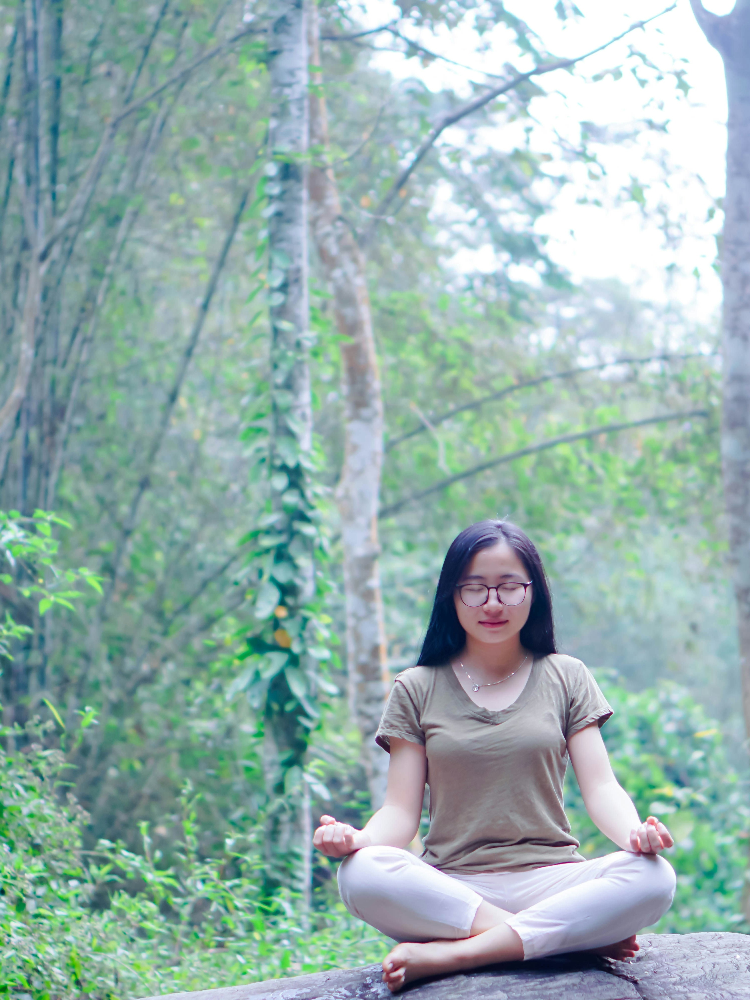
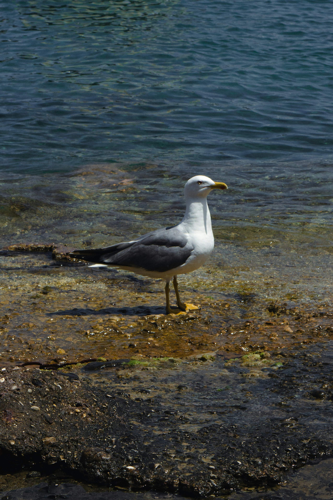
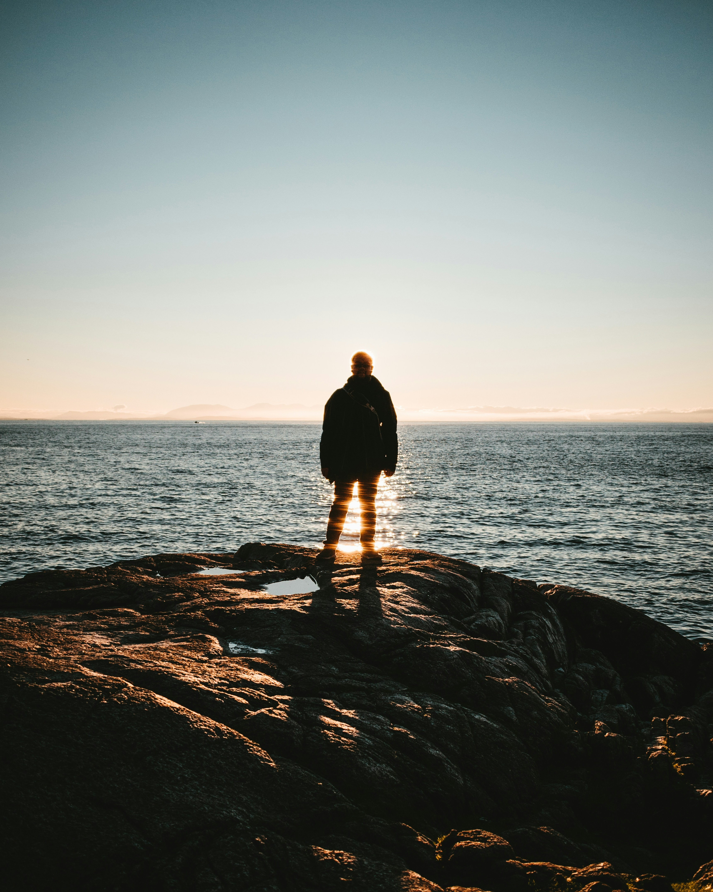
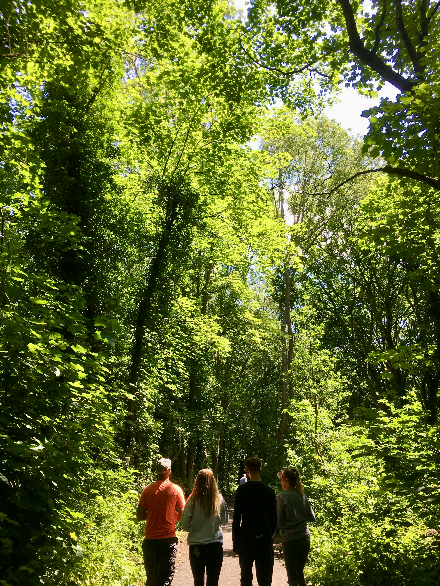
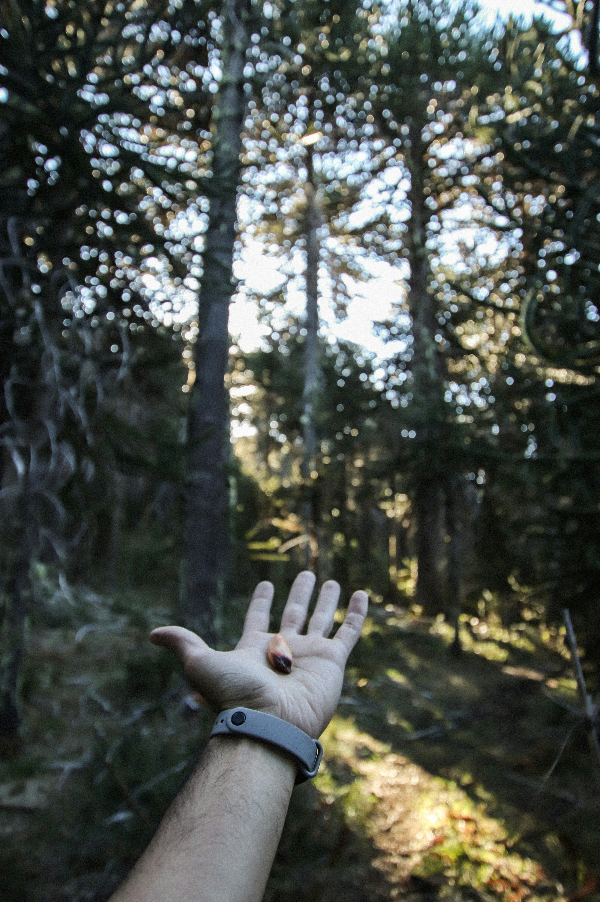

History
Meet Emily Dean: Our founder and CEO, a California native since 1980. Growing up, Emily loved traveling with her family to spend holidays at the ocean. Over time, she found herself distancing from nature and after working as a software developer in Silicon Valley for 15 years, Emily knew she needed a change.
In her childhood, Emily fell in love with sharing the joy of nature with others. A trip to the Pacific coast reignited Emily's determination to pursue her passion, and thus the Pacific Trails Resort was born! Today, the resort reflects everything Emily loved (and still loves!) about California’s North Coast. The welcoming but relatively untouched grounds reflect our dedication to a relaxing getaway in the wild within a safe and luxurious environment. Our many kayaking, hiking, and exploring opportunities support our goal of providing guests new experiences. Our warm and welcoming host of staff help maintain and uplift not just a community, but a family here at Pacific Trails.
Our Values




